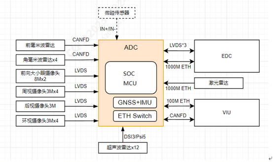
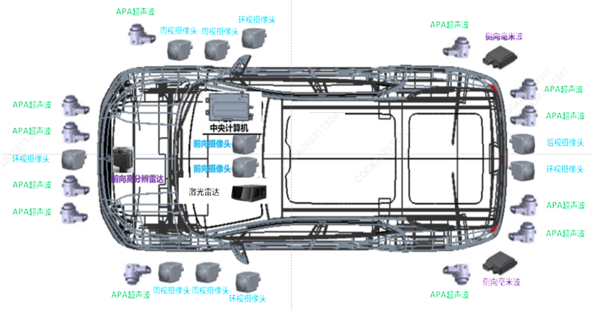
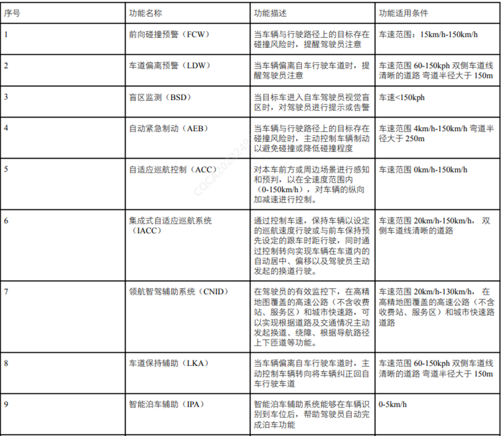

系统原理框图

整车拓扑

系统功能
中央计算机（J6M）作为中算力平台的智能驾驶系统的域控制器，采用液冷散热系统，接入 3R（前雷达*1 + 角雷达*2）、11V（环视*4 +周视*4 + 前视*2 + 后视*1）、 1L（激光雷达*1） 、12U（超声波传感器*12）的传感器的视频流、点云等传感数据，结合高精度地图、GNSS 和 IMU 等数据进行感知融合处理，合理的控制车辆实现智能驾驶功能，实现的主要功能如下：
